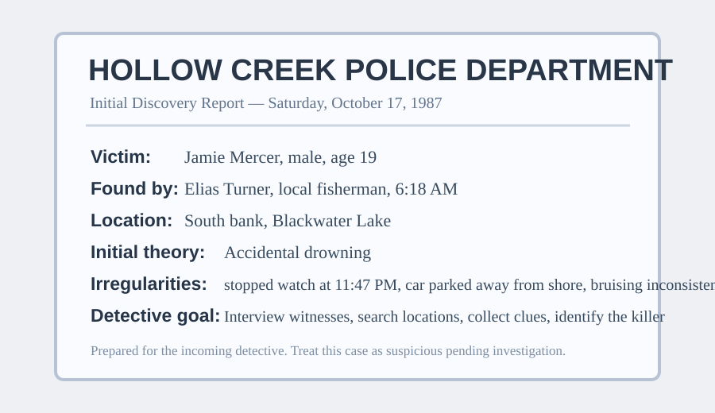
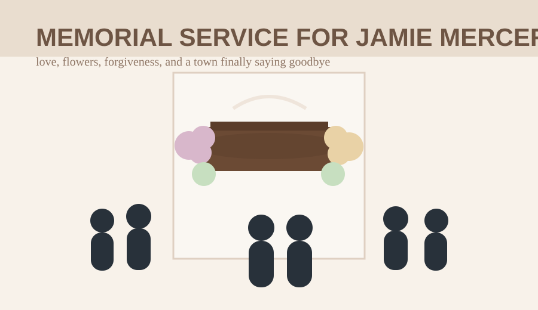

Find the truth behind Jamie Mercer’s death
Question the town. Search the places that mattered. Listen when the dead speak. Every fact you need exists somewhere in Hollow Creek — but nobody will hand you the answer.
You are the detective. The police report gives you a starting point. The people of Hollow Creek give you fragments. Jamie’s spirit gives you guidance. The final accusation is yours.
Jamie Mercer’s life
Jamie was nineteen. He helped his mother around the house, did occasional work in town, and carried a quiet sense of responsibility that made people trust him. He was not reckless. He was not looking for danger.
In the last days of his life, Jamie uncovered information that made him deeply uneasy. He wanted to do the right thing. He wanted to bring it into the open. That choice cost him his life.
How to solve the case
- Read the official discovery details in the Police Report tab.
- Use the Interviews tab to speak with people in town.
- Use the Locations tab to search for physical evidence.
- Review your Evidence File and Spirit File in the Case File tab.
- Enter the murderer’s name in the Solve tab when you are ready.

Initial Death Discovery
Victim: Jamie Mercer, 19
Date discovered: Saturday, October 17, 1987
Time discovered: 6:18 AM
Discovered by: Elias Turner, local fisherman
Body location: south bank of Blackwater Lake
Initial theory: accidental drowning
Concerns already noted by police:
- Jamie’s wristwatch stopped at 11:47 PM.
- His car was found parked away from the immediate shoreline.
- There were marks on his body that seem inconsistent with a simple fall into the lake.
- The old boathouse path nearby showed signs of recent movement.
Evidence File
Spirit File
Whenever Jamie appears, his words are saved here.
Name the murderer
If you believe you know who killed Jamie Mercer, enter the killer’s name below. You only need the name.
